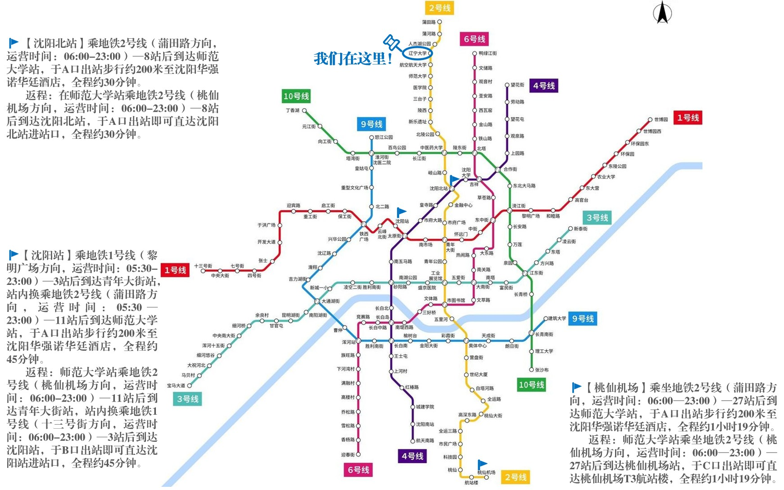
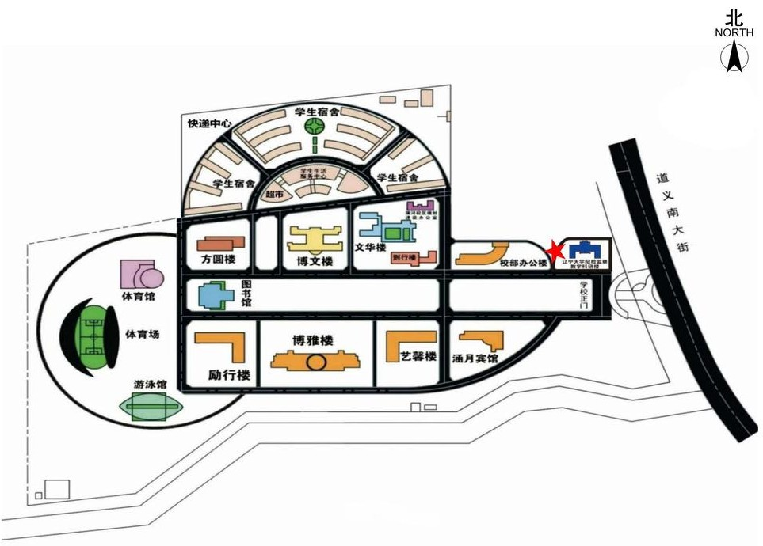

主旨报告·圆桌会议
心理学与纪检监察学跨学科交流与应用
About
中国社会心理学会廉政心理学研究专委会简介 中国社会心理学会廉政心理专业委员会是由全国28家高等院校和科研院所的38名各领域知名专家组成，在 2025年1月14日中国社会心理学会第十届五 次常务理事会上被批准筹建。 廉政心理专业委员会的宗旨是从心理认知机制层面探究腐败行为的发生发展变化规律及其关键影响因素，理解“不想腐”的内在机制，激发“不想腐”的内生动力，提供“不想腐”的有效措施，更好地服务于党和国家的重大需求。主要业务工作包括： 第一，建立廉政心理的学术研究和交流平台，促进心理学及相关领域（特别是认知科学、管理科学、神经科学、智能科学、数据科学）与纪检监察学及相关领域（特别是政治学、法学）相关研究人员在廉政心理方面的开展跨领域交流与合作； 第二，对接各级纪委实际需求，有针对性地开展应用研究；通过与全国各地各级纪委监委合作，基于公务员群体构建廉政心理行为人格数据库，为政府部门预防腐败、选拔廉政人才提供有价值的科学依据； 第三，推动研究成果转化，以内参、专报等形式报送至各级政府以及纪委监委部门，为预防腐败、选拔廉政人才提供有价值的科学依据； 第四，积极开展国际合作和跨文化研究，向世界展现中国坚定反腐决心，并向国际宣传中国的反腐经验； 第五，与各级政府、纪委监委进行对接，为公务员群体开展专题培训，助各级纪委监委设计和实施更有针对性的廉政教育、科普讲座，鼓励相关研究成果共廉政教育基地等部门进行反腐教育展览，助力新时代廉洁文化建设； 第六，推动全国各大高校开设廉政心理及相关课程，推动相关教材的撰写；助力培养廉政心理及相关领域（如纪检监察学）所亟需的复合型、职业型、创新型专门人才，为全面推动该领域发展提供坚实的人才和智力支撑。
辽宁心理测试与行为分析重点实验室简介 （辽宁大学心理测试与行为分析实验室） 2022年7月，辽宁省纪委监委、大连市纪委监委和辽宁大学三方共同创建辽宁省心理测试与行为分析重点实验室。该实验室是全国最早、东北唯一的一所将心理测试与行为分析技术应用在纪检监察领域的省级重点实验室。实验室是委校合作“两院一室一中心一期刊”总体布局的重要组成部分。 实验室为实体科研机构，坐落于辽宁大学蒲河校区纪检监察与法学学部教学科研大楼，拥有近红外实验室、脑电实验室、热成像实验室、电刺激实验室、眼动实验室等多个现代化实验空间。配备深层语音情感分析、多模态情感分析、多导生理仪等先进设备，全面支撑纪检监察实战需求。 实验室汇聚了国内顶尖专家团队，由中国科学院院士、北京大学原校长王恩哥担任学术委员会主任，由中国工程院院士、辽宁大学党委书记潘一山担任实验室主任，并聘请多位知名学者与实务专家参与建设；同时积极拓宽国际视野，与德国图宾根大学、德国吉森大学、英国约克大学和荷兰唐德斯脑、认知与行为研究院等世界知名高校建立合作关系，致力于打造具备国际一流技术标准、设施设备和专家队伍的心理测试研究、应用及人才培养平台。
Program
信息持续更新中……
心理学与纪检监察学跨学科交流与应用
廉政及相关行为的心理认知机制与神经基础
情感分析技术在纪检监察工作中的研究与应用
廉洁前置教育的实践路径研究
Speakers
名单持续更新中（姓名首字母顺序）……
Venue


Registration
本次会议免注册费，食宿自理。请与会人员于7月4日（星期六）8:00前扫描下方二维码进行注册
签到与邀请函等报销材料发放挂钩
会议不开放投稿
Contact